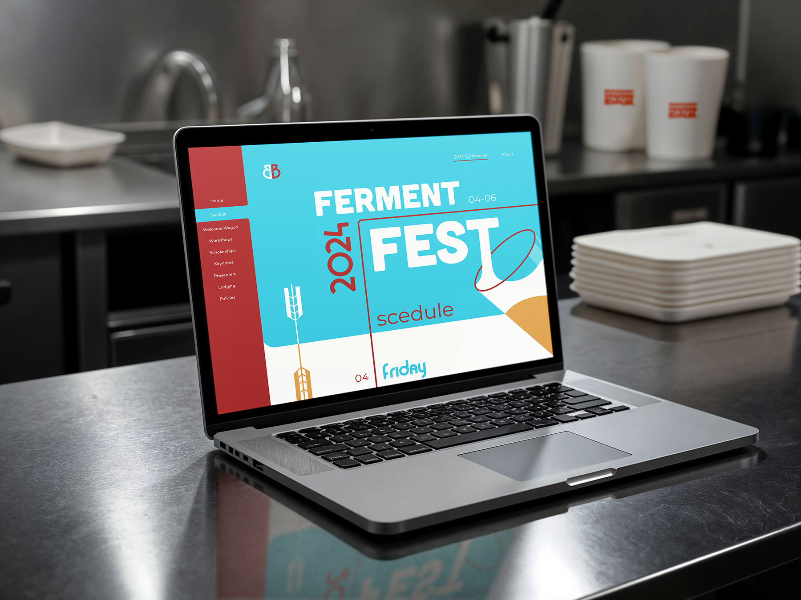
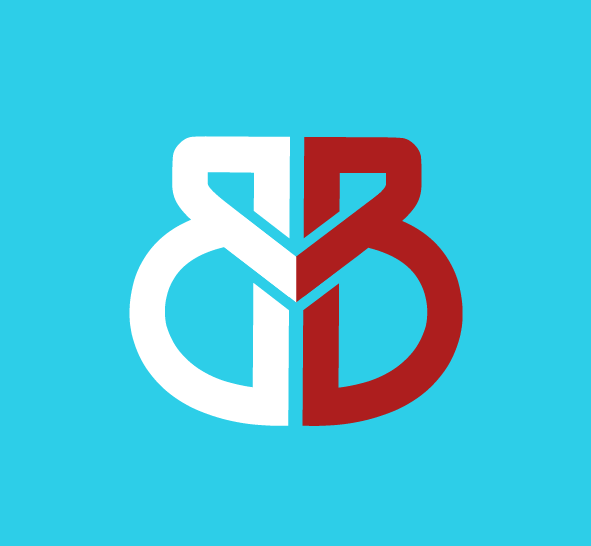
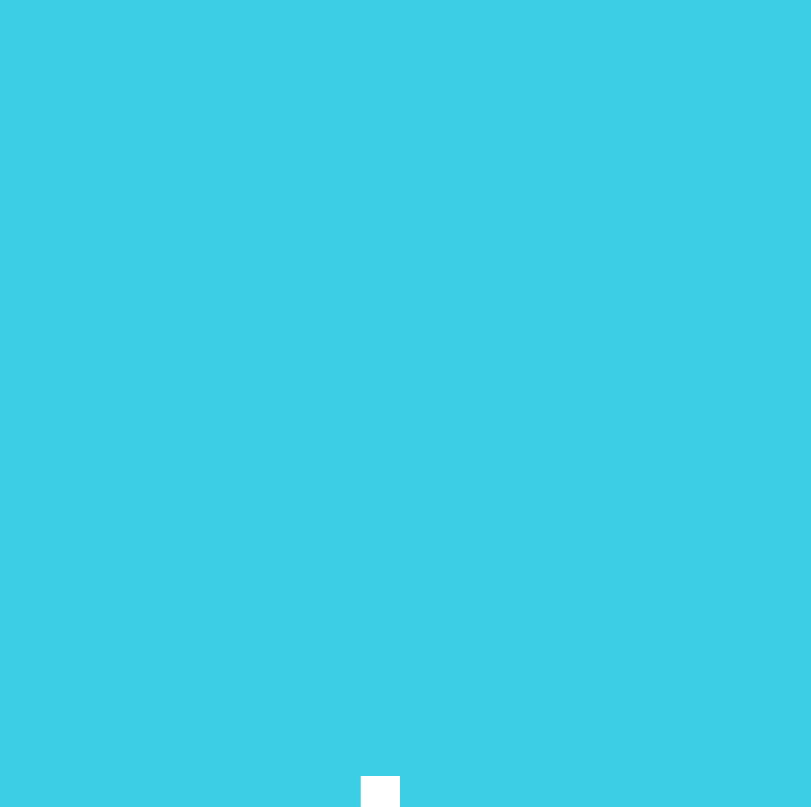

Color Palette
About the Project
Branding and website design for Buford Brewery, built around a bold identity and an engaging digital experience. The identity pairs a strong custom logotype with a vibrant teal, crimson, and gold palette that feels both energetic and grounded. The website was designed to carry that identity across a full conference schedule layout, balancing dense event information with a visual system that keeps the brand feeling alive throughout.
Logo Design

Logo Animation
